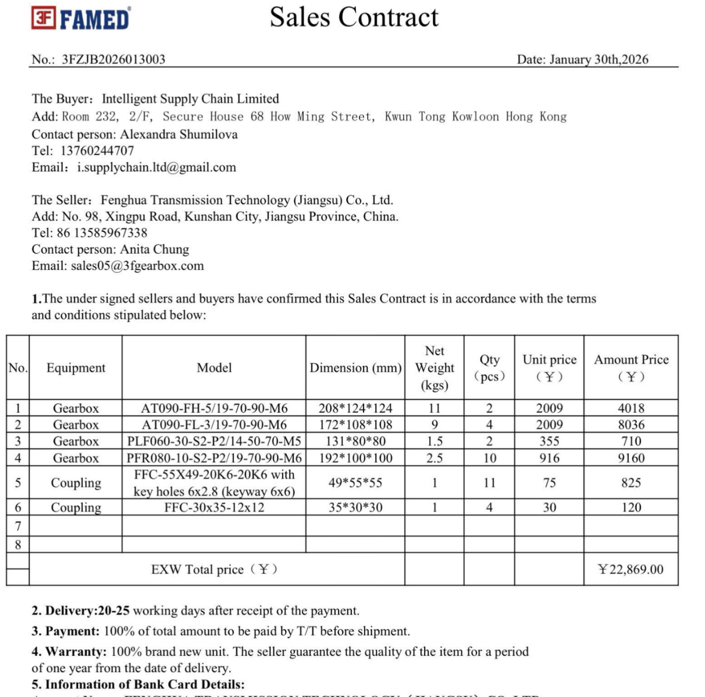
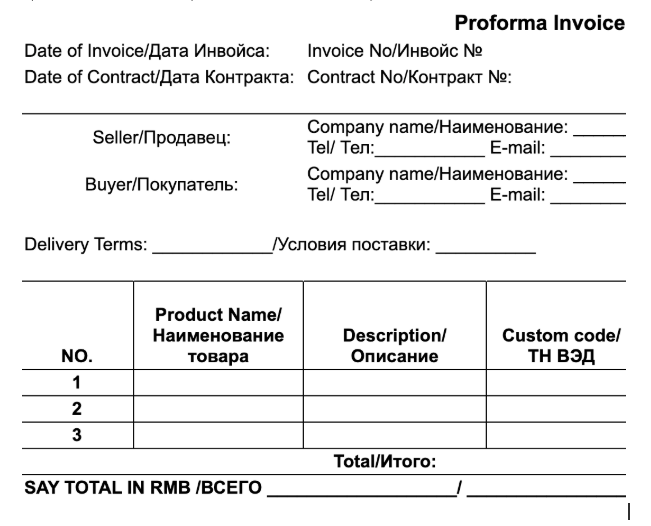

Тихая ошибка, которая ежегодно стоит предпринимателям сотни тысяч рублей при импорте из Китая — даже когда поставки доезжают
Теперь любой, кто возит товар из Китая, может увидеть, где именно он рискует деньгами — без найма дорогих консультантов, без смены логиста и даже если посредник говорит «всё нормально»
Приветствую, меня зовут Александра Шумилова.
Полностью я представлюсь через мгновение.
А на картинке выше — белый конверт. Обычный деловой конверт — с печатью, без обратного адреса. Такие конверты кладут на стол и не открывают, потому что боятся читать.
Какое отношение этот конверт имеет к импорту из Китая? И как именно он помог мне увидеть то, что не видят 90% предпринимателей, которые возят товар годами?
Я расскажу через несколько минут. А пока...
Прочитайте эту статью до конца, и вы узнаете:
- почему большинство предпринимателей, которые возят из Китая годами, на самом деле не управляют своим импортом, а лишь надеются на удачу — и как за три минуты проверить, относится ли это к вам
- какая конкретная ошибка превращает каждую поставку в лотерею с вашими деньгами — и как её увидеть прямо сейчас, в вашей текущей схеме работы
- что такое «слепой импорт» и почему именно он, а не «плохой поставщик» и не «жадный логист», является настоящей причиной потерь — даже если товар каждый раз доезжает
- почему переход с карго на «белый ввоз» часто оказывается иллюзией — и как понять, действительно ли ваша схема белая или это тот же карго, прикрытый документами
- и как за два рабочих дня получить чёткую картину: где именно в вашем импорте сейчас находятся деньги, товар и документы — и что произойдёт, если завтра придёт запрос от налоговой, банка или маркетплейса
Прежде чем идти дальше — вот что вы поймёте, прочитав эту статью.
- Вы откроете контракт с поставщиком и впервые увидите, какой именно пункт может обернуться штрафом за нарушение валютного законодательства — тот самый пункт, мимо которого вы проходили годами, думая «ну, все же так работают».
- Вы посмотрите на свою последнюю поставку глазами таможенного инспектора и банковского комплаенса — и поймёте, почему фраза «товар доехал» не значит «всё легально».
- Вы увидите конкретный этап в цепочке, на котором прямо сейчас теряете деньги — не «где-то в логистике», а точно: в расчёте себестоимости, в схеме оплаты или в документах на таможне.
- Вы перестанете кивать, когда посредник пишет «всё нормально» — потому что будете знать, какие три вопроса задать, чтобы проверить, нормально ли это на самом деле.
- Вы узнаете, что происходит с предпринимателями, которые переходят с карго на белый ввоз, ориентируясь на дешёвые тарифы — и почему именно сейчас, в 2025–2026 году, это перестаёт быть безопасным.
Вы узнаете критическую ошибку, которая превращает каждую поставку в мину замедленного действия.
Один из моих клиентов — импортёр, который несколько лет возил товар через карго-компанию. Он был уверен, что покупает у прямых фабрик и платит фиксированную, понятную комиссию. На деле оказалось: товар закупался не у фабрик, а у разных посредников, закупочная цена была значительно ниже озвученной, а в логистику была зашита скрытая наценка. Человек годами переплачивал — и не знал об этом. Не потому что был невнимательным. А потому что у него не было инструмента, чтобы это увидеть.
Что изменилось? Он перешёл на прямую работу с фабрикой по контракту. Теперь видит каждую строку расходов: сколько стоит товар, сколько — комиссия финансовому агенту за перевод, сколько — компании, организующей импорт. Никаких скрытых наценок. Полная прозрачность. И впервые за годы — уверенность, что он управляет себестоимостью, а не кто-то другой.
На самом деле — забудьте про «найти более надёжного посредника» и «перейти на другого логиста».
Я понимаю, почему вы это делали. Это логично. Но это не работает — не потому что посредники плохие, а потому что проблема вообще не в них. И через несколько минут вы поймёте, в чём она на самом деле.
Это совершенно иной подход к импорту из Китая — и сегодня вы узнаете его секрет.
Читайте прямо сейчас, пока статья доступна.
Вы знаете, настоящая проблема в импорте из Китая — это не «плохие поставщики» и не «сложная таможня».
Настоящая проблема — поток дезинформации.
И вы пробуете... но в итоге получаете либо постоянную тревогу, либо реальные убытки, когда приходит первая проверка.
А потом, совершенно случайно, натыкаетесь на нечто другое. Что-то, что заставляет всё встать на свои места...
Хорошие новости: сегодня — тот самый день.
Сегодня вся путаница вокруг «белого» и «серого» импорта исчезнет.
Прочитав эту статью до конца, вы наконец:
- Поймёте, почему импорт должен работать как управляемый процесс, а не по принципу «в прошлый раз доехало — и сейчас доедет»
- Узнаете, как увидеть свои риски до того, как их увидит налоговая или таможня
- Разберётесь, почему «дешевле через карго» на самом деле может оказаться самым дорогим решением в вашей жизни
- Осознаете, что можно возить из Китая и спокойно спать — не потому что «повезёт», а потому что вы понимаете каждый шаг
И это только начало...
Простое чтение этой статьи сегодня не только даст вам понимание. Оно вернёт вам контроль. А контроль — это то, без чего любой бизнес с Китаем обречён.
Но прежде чем мы пойдём дальше, хочу быть с вами честной.
Сейчас я расскажу историю, которая начинается с предательства и белых конвертов с печатями.
Она объяснит, почему я знаю об импорте то, что логисты и посредники редко говорят прямо — потому что это не в их интересах.
Вот что пишут люди, с которыми мы работали:


Но я не всегда была экспертом в ВЭД. Даже наоборот.
Была точка, когда я потеряла всё. И именно она привела меня к тому, что я знаю сейчас.
Помню это как вчера. Начало 2014 года. Кемерово, январь.
У меня была компания. Команда. Налаженные процессы. Я работала с Китаем уже несколько лет — поставки шли, бизнес рос, всё казалось под контролем.
А потом за одну неделю всё рухнуло.
Люди, которым я доверяла. С которыми строила бизнес. С которыми праздновала первые крупные сделки, сидя вечерами в переговорке с кофе и планами на следующий год.
Они предали. Скоординированно, методично — как будто готовились месяцами.
Я пришла в офис утром — обычным утром, понедельник, кофе в руке — и обнаружила, что документов в сейфе нет. Доступа к расчётным счетам — нет. Товара на складе — нет. Все клиенты компании получили письма, что я — мошенница.
Людей в офисе больше не было. Никого. Как будто всё, что было построено — было иллюзией.
Руки дрожали. Я стояла посреди собственного офиса и не могла сесть за собственный стол.
В тот же день начались звонки. Один за другим. Клиенты. Госзаказчики. Налоговая. Департамент по охране труда. Прокуратура. Отдел по борьбе с экономическими преступлениями.
Всё в один день. Потому что кто-то очень постарался, чтобы это было именно так. Синхронно. Удар со всех сторон.
Вечером я сидела на кухне. На столе — стопка конвертов. Тех самых. Белых, деловых, с печатями — точно таких, как на картинке в начале этой статьи. Каждый конверт — новый вызов или требование. Я брала их в руки по одному. Пальцы не слушались — такие вещи не описывают в бизнес-книгах. Когда ты читаешь своё имя в документе, где написано «привлечь к ответственности» — внутри становится пусто, и ты физически не можешь вдохнуть полной грудью.
Теперь вы понимаете, почему я начала эту статью с белого конверта.
Кредиторы приезжали домой. Не звонили — приезжали. Угрожали. Телефон не замолкал. Я перестала брать незнакомые номера. Потом перестала брать любые.
Я была директором и учредителем. Это значило одно: отвечаю я. За всё. За подписи, которые поставили без моего ведома. За схемы, в которые меня не посвятили. За решения, которые приняли люди, которых я больше не могла назвать партнёрами.
Ком в горле не проходил неделями. Я засыпала с ним и просыпалась с ним. Однажды поймала себя на том, что стою в ванной и держусь за раковину обеими руками, потому что ноги не держат.
В какой-то момент я поняла: у меня нет ни одного человека, который мог бы помочь. Ни одного. Юристы брали деньги и разводили руками: «Ситуация сложная, будем пробовать». Знакомые исчезали — не сразу, а тихо, один за другим. Партнёры — те самые, с которыми строили — молчали. Как будто меня не существует.
Мне пришлось закрыть компанию. Всё, что я строила несколько лет — папки с документами, базы контактов, наработанные связи — всё превратилось в стопку бумаг для ликвидации.
И тогда я взяла тот самый белый конверт — последнее уведомление о закрытии дела — и уехала в Китай.
Не чтобы начать новую компанию. Не чтобы «перезапуститься». Просто уехала. Потому что больше нечего было терять, и единственное, что я умела — это работать с Китаем.
Тот конверт до сих пор лежит у меня в столе. Я храню его как напоминание. Как точку, из которой выросло всё, что я знаю сейчас.
И именно этот опыт привёл меня к открытию, которым я сейчас поделюсь.
Несколько лет я была фрилансером. Работала переводчиком на деловых переговорах — сидела в прокуренных переговорках на фабриках в Гуанчжоу. Помогала предпринимателям разбираться с поставками. Жила внутри китайского бизнеса — не снаружи, как турист, а изнутри.
Видела, как работают фабрики. Как договариваются с логистами. Как оформляют документы — и как не оформляют. Как выглядит «всё нормально» изнутри — и чем оно отличается от того, что рассказывают клиентам.
Именно тогда я поняла, что на самом деле ломается в импорте.
Не «плохие поставщики». Не «нечестные логисты». Не «сложная таможня».
Ломается всегда одно и то же. И у всех.
Благодаря тому опыту я обнаружила нечто вроде «чертежа» — общего для всех, кто возит товар из Китая и чувствует, что что-то идёт не так, но не может понять, что именно.
Несмотря на всё, что я прошла — в вопросе «я не до конца понимаю, что происходит с моим импортом» я ничем не отличалась от вас. Я тоже когда-то надеялась на посредников. Тоже подписывала документы, не понимая каждой строчки. Тоже думала: «Ну, товар же доехал — значит, всё нормально».
Теперь я знаю, что это не нормально. И теперь я знаю, как это исправить.
Когда я нашла этот «чертёж», стало возможным то, что раньше казалось невозможным:
- Открывать ноутбук и за пять минут видеть, где сейчас каждый рубль, каждая единица товара и каждый документ — без звонков посреднику
- Спокойно отвечать на запрос налоговой в тот же день — потому что все бумаги на месте и выдерживают проверку
- Считать реальную себестоимость товара до отправки — а не задним числом, когда деньги уже потрачены
- Выбирать поставщиков и логистов осознанно — понимая, за что именно вы платите и какие риски берёте на себя
- Масштабировать поставки без страха — потому что система работает одинаково и на одном контейнере, и на десяти
Мои клиенты платят серьёзные деньги за то, чтобы получить это понимание в индивидуальной работе. Но то, о чём я расскажу сегодня — я хочу, чтобы это дошло до как можно большего числа людей, которые возят из Китая и пока ещё не понимают, где именно рискуют.
Хотите результат быстрее — я покажу, как. Но сначала давайте разберёмся в том, что на самом деле происходит.
Я должна предупредить вас о том, что в нише ВЭД с Китаем называют «слепым импортом».
Это не термин из учебника. Это то, что происходит прямо сейчас с большинством предпринимателей, которые возят товар — и считают, что всё под контролем.
Представьте такую картину.
Воскресенье, вечер. Вы лежите на диване и проверяете трек-номер в пятый раз за день. Груз «в пути». Хорошо. Вы закрываете телефон. Через двадцать минут — снова открываете. Груз «в пути». Снова закрываете.
Посредник в последний раз писал три дня назад: «Всё нормально, едет». Вы не знаете, что именно «едет», как именно «едет» и что значит «нормально» в его понимании. Но спрашивать неловко, потому что вы уже несколько лет возите и как будто должны понимать.
На прошлой неделе пришли документы. Вы посмотрели на них секунд тридцать, нашли сумму — сумма примерно та, что ожидалась — и убрали в папку. Нормальные документы или «для галочки»? Вы не знаете. Но уточнять — стыдно.
А в голове крутится одно: «А если завтра придёт запрос от налоговой, банка или маркетплейса?»
Вы ложитесь спать, но не засыпаете ещё полчаса. Прокручиваете в голове: а что я вообще отвечу? Какие документы покажу? А они настоящие?
Узнаёте себя?
Именно это и есть слепой импорт.
Вот три истории из моей практики — чтобы вы увидели, как это выглядит в реальности.
Импортёр несколько лет покупал товар в Москве у китайского поставщика. Был уверен, что работает напрямую с фабрикой. Но качество скакало от партии к партии: то нормально, то брак. Он списывал это на «ну, Китай — что поделать». На самом деле «поставщик» оказался перекупщиком, который собирал товар с разных производств. Ни контроля качества, ни стабильности, ни возможности предъявить претензии напрямую фабрике. Человек годами платил и не знал, кому.
Предприниматель решил перейти с карго на белый ввоз. Запросил расчёты у нескольких компаний. Выбрал ту, где цифры были самыми низкими — логично же. Но после начала работы начали всплывать «доп. расходы»: рост тарифов, складские, транспортные. А другая компания, с ещё более «выгодным» предложением, предоставляла «официальные» закрывающие документы — но фактически везла карго. Человек думал, что перешёл на белый ввоз. Документы лежали в папке. Схема казалась белой, пока не пришёл запрос с налоговой.
Шла официальная поставка. Поставщик сам оформил экспортную декларацию — сказал, что у них есть опыт, всё возьмут на себя. Товар дошёл до таможни. Таможня запросила экспортную декларацию. Когда мы получили документ — в нём не совпадали наименования, вес и цена с импортными документами. Если бы мы это не поймали — таможня выставила бы доначисления и штрафы. Импортёру. Не поставщику.
Три разных ситуации. Одна общая причина: человек платил и отвечал головой — но не контролировал процесс.
Многие думают: «Ну, если товар доехал — значит, всё легально». Это не так.
- Товар может доехать — и при этом у вас не будет ни одного документа, который выдержит проверку налоговой.
- Товар может доехать — и при этом себестоимость окажется совсем не той, что вы считали.
- Товар может доехать — и через год таможня доначислит платежи в бюджет на миллионы рублей.
Другая распространённая иллюзия: «У меня есть посредник, значит, я защищён». Посредник не несёт вашу ответственность. Когда придёт запрос — он пожмёт плечами или исчезнет. Отвечаете вы. Своими деньгами. Своим бизнесом. Иногда — своей свободой.
Вот ещё один случай из практики, который это наглядно показывает. В начале развития бизнеса у нас был заказ на оборудование из Китая. Своей компании для импорта ещё не было, поэтому обратились к российской компании — техническому импортёру. Нам сказали: «Всё будет сделано официально, полный пакет документов».
По факту поставку провели по схеме карго. Вместо таможенной декларации мы получили только товарно-транспортную накладную. На вопрос «где декларация?» — отговорки: сборный груз, товар указан под другим наименованием. А когда пришёл запрос от налоговой — отвечать пришлось нам. Не «техническому импортёру». Нам.
Не вините себя за то, что оказались в этой ситуации. Я сама в неё попадала. Это системная ловушка — и она устроена именно так, чтобы из неё не было видно выхода.
Это ситуация, когда предприниматель ввозит товар из Китая, не понимая и не контролируя процесс. Документы вроде бы есть — но их содержание непонятно. Посредники что-то делают — но что именно, неизвестно. Груз едет — остаётся только надеяться.
Предприниматель платит и отвечает головой — но ничего не контролирует. И продолжает так работать из-за трёх ложных успокоений:
- раз в прошлый раз доехало — и сейчас доедет
- раз все так делают — значит, нормально
- лучше не знать, чем знать и переживать
Именно эти иллюзии удерживают в ловушке.
«Решил бы это — всё изменилось бы», — сказал мне один клиент уже после того, как мы разобрали его схему. Но как начать?
Вот мои личные любимые приёмы, которые я использую с каждым клиентом.
Но сначала — о том, что точно не поможет.
- «Найти более надёжного посредника» — это смена одного источника доверия на другой. Вы по-прежнему не понимаете, что происходит. Вы просто надеетесь на другого человека. Это как сменить водителя такси, не зная, куда вы едете. Другой водитель — те же проблемы.
- «Изучить все ГОСТы и таможенные правила» — можно потратить год и всё равно не понять, как ваша конкретная цепочка работает на практике. Потому что между нормой и реальностью — пропасть. И пока вы читаете законы, ваши деньги продолжают ехать вслепую.
- «Перейти с карго на белый ввоз, выбрав того, кто дешевле» — одна из самых опасных иллюзий. 95% предпринимателей, которые «переходят на белый ввоз», на самом деле просто переходят с одного карго на другое — только теперь с «красивыми» документами в папке. Документы есть. Ощущение «белого» ввоза есть. А реальной защиты — нет.
Все три пути убивают время и создают иллюзию движения.
Вот один простой практический тест. Прямо сейчас — если хотите.
Возьмите любой документ из последней поставки. Контракт, инвойс, CMR — любой. И ответьте на три вопроса:
Если вы не можете ответить уверенно хотя бы на два из трёх — вы в слепом импорте. Независимо от того, сколько лет вы уже возите.
Чтобы вы понимали, о чём речь — вот реальный пример.
Типичный контракт, который присылает китайский поставщик, выглядит как короткая таблица на китайском: товар, цена, количество. Всё. Его нельзя использовать для таможенного оформления в России — он не соответствует требованиям. Но предприниматели подписывают его, потому что «ну, поставщик же прислал».


А вот как выглядит контракт, который проходит и таможню, и банк: двуязычный документ на русском и английском, с чётко прописанными условиями поставки по Incoterms, с реквизитами обеих сторон, с порядком оплаты и ответственности. Разница — как между запиской на салфетке и юридическим документом.
Большинство предпринимателей даже не подозревают, что работают с «салфеткой». Пока товар не застрянет на таможне.
Но знание этого само по себе мало что даёт. Нужна система. И не набор правил для зубрёжки, а принцип, который меняет сам подход.
Я называю это «Система каскадного импорта».
Возможно, вы сейчас подумали: «Ну вот, красивое название — а внутри очередной курс». Я вас понимаю. Вы, скорее всего, уже покупали курсы. И возможно, на вашем жёстком диске лежат PDF-файлы, которые вы так и не открыли. Или открыли — и ничего не изменилось.
Это другое. И вот почему.
Каскадный импорт — это не методика и не курс. Это способ видеть импорт как логически связанную цепочку решений, в которой каждый шаг влияет на следующий — от выбора поставщика до документа на таможне.
Вот как это работает на практике:
Именно это — ответ для предпринимателей, которые хотят открыть ноутбук и видеть: где деньги, где товар, где документы — и что будет, если завтра придёт запрос. Не гадать. Не надеяться. Понимать.
Это не обучение ВЭД. Это возвращение контроля — через практические инструменты: таблицы, схемы, шаблоны, которые превращают хаотичный процесс в каскад управляемых этапов.
В чём отличие от бесплатных видео на YouTube? На YouTube вы найдёте общие объяснения: что такое Incoterms, как устроена таможня, какие бывают схемы. Это полезно — но это теория в вакууме. Система каскадного импорта — это когда вы берёте свою конкретную поставку и видите, где в ней сейчас спрятан риск. Не «в целом», а именно у вас.
Проверьте свой импорт — 7 вопросов, 3 минуты
Ответьте честно: да или нет. Без гугла, без документов — только то, что знаете прямо сейчас.
- У вас есть двуязычный контракт (рус + кит) с вашим поставщиком?
- Вы видели экспортную декларацию на последнюю поставку?
- Вы знаете реальную себестоимость партии — с учётом всех расходов до вашего склада?
- Ваш поставщик может выдать официальный инвойс для таможни?
- Вы знаете код ТН ВЭД своего товара и какие платежи к нему применяются?
- Вы получили упаковочный лист (packing list) на последнюю партию?
- Если банк запросит документы по вашим ВЭД-операциям — вы знаете, что именно предоставить?
У вас сейчас три пути — и у каждого свои последствия.
Вы закроете эту страницу. Поставки продолжатся. Посредник будет писать «всё нормально». Треки — проверяться по пять раз в день. Документы — складываться в папку без понимания.
Представьте себя через год. Обычный вторник, три часа дня. Вы на встрече с клиентом. Звонит телефон — незнакомый номер. Вы сбрасываете. Через минуту — СМС: «Уведомление о блокировке расчётного счёта. Обратитесь в отделение банка».
Вы выходите из переговорки. Руки холодные. Открываете приложение банка — счёт заблокирован. 3,2 миллиона на нём. Товар в пути — ещё на 1,8 миллиона. Оплатить поставщику — нечем. Отгрузить клиентам — нечем. Зарплата сотрудникам через неделю — нечем.
Вы звоните посреднику. Он не берёт трубку. Перезванивает через два часа: «Я не знаю, это не ко мне, разбирайтесь с банком».
Вы звоните в банк. Девушка на линии говорит: «Предоставьте документы, подтверждающие законность операций по внешнеэкономической деятельности». Вы открываете папку с документами и понимаете — вы не знаете, что из этого подойдёт. И подойдёт ли вообще.
Это не фантазия. Я видела это десятки раз.
Это возможно. Серьёзно. Если у вас есть год-два на глубокое погружение, готовность совершить дорогостоящие ошибки на собственных поставках и желание разбираться в каждом нюансе с нуля — от Incoterms до валютного контроля.
Большинство предпринимателей, которые пробовали этот путь, в итоге всё равно пришли к системе — только потеряв время и деньги по дороге.
Вот пример: предприниматель из ниши одежды закупал у 10–15 поставщиков с 1688 через карго. Решил перейти на белый ввоз самостоятельно. Потратил месяцы на изучение вопроса. В итоге выяснилось, что большинство его поставщиков не могли оформить экспорт в принципе — у них не было ни лицензии, ни юрлица для безналичных расчётов. Всё, что он изучал, оказалось неприменимо к его конкретной ситуации.
18 лет работы. Более 200 клиентов. Реальные кейсы — одежда, оборудование, аксессуары, промышленные товары, электроника, стройматериалы, бытовые товары. Я уже прошла через всё, что может пойти не так в импорте из Китая. И собрала из этого систему.
Можете представить?
Если вы уже понимаете, что это про вас — не откладывайте. Регистрация занимает 2 минуты.
Двухдневный онлайн-воркшоп
«Слепой импорт — увидеть реальность»
Два дня по 2 часа в Zoom · Прямой эфир с Александрой · Разбор реальных ситуаций
Не курс. Не вебинар с презентацией. Не «обучение ВЭД».
Это диагностика вашего импорта — в прямом эфире, на реальных примерах, с конкретными инструментами. Вы делаете — и сразу видите слабые места вашей схемы.
Я знаю, что вы, скорее всего, уже пробовали. Покупали курсы. Скачивали чек-листы. Слушали вебинары. И, возможно, у вас сейчас на жёстком диске лежат три PDF, которые вы так и не открыли.
Этот воркшоп устроен иначе: мы не учим «как возить из Китая вообще». Вы берёте свою реальную схему — вашего поставщика, вашу логистику, ваши документы — и видите, где в ней прямо сейчас спрятан риск.
Это работает, даже если...
- Вы возите через карго и не собираетесь ничего менять прямо сейчас — вы хотя бы будете точно понимать, где именно рискуете и на какую сумму.
- У вас уже есть посредник, которому вы доверяете — вы сможете задать ему пять конкретных вопросов и за десять минут понять, насколько обосновано это доверие.
- Вы возите совсем небольшие объёмы и думаете «я слишком маленький, чтобы меня проверяли» — потому что банки и налоговая не смотрят на объём, они смотрят на схему. Блокируют и за 200 000 рублей.
- Вы уже покупали курсы по ВЭД и знаете много теории — потому что здесь мы не учим правила, а смотрим на вашу реальную ситуацию и находим конкретные дыры.
- Вы только начинаете и ещё не сделали ни одной поставки — потому что лучше увидеть риски до первого контейнера, чем после первой проверки.
- Ваш бизнес сейчас идёт хорошо и «вроде бы всё нормально» — потому что именно в этот момент большинство предпринимателей перестают смотреть на документы. И именно тогда копятся ошибки, которые потом бьют больнее всего.
теория о том, как «правильно» делать импорт по учебнику. Это живые два дня работы с экспертом, у которого за спиной — 18 лет практики в Китае и более 200 реальных клиентов из десятков товарных категорий.
Вот что вы получите конкретно:
-
Живой разбор вашей конкретной ситуации Вы задаёте вопрос по своей схеме поставки прямо в эфире и получаете ответ от практика с 18-летним опытом. Не общие советы — а конкретно по вашему поставщику, вашей логистике, вашим документам.
-
Чек-лист диагностики вашего импорта Документ, по которому вы пройдёте свою текущую схему шаг за шагом и увидите, где документы, где деньги, где риски. Не абстрактно, а применительно к вашей ситуации.
-
Набор вопросов для проверки посредника или логиста За 15 минут понять, можно ли ему доверять. Не по ощущениям, а по конкретным ответам.
-
Бонус: пошаговый план перехода к управляемому импорту Что делать первым, что вторым, на что обратить внимание в первой же следующей поставке. Для тех, кто пройдёт оба дня.
Вот что говорят люди, которые уже прошли через это:


Да, у меня есть платные программы — индивидуальные консультации, организация поставок, выход на прямые контракты с фабриками. Но на воркшопе вы увидите инструменты, которые работают сами по себе. А уже потом решите, нужно ли вам идти дальше.
Есть вопросы по воркшопу или не уверены, подойдёт ли это для вашей ситуации? Нажмите на кнопку ниже — там можно задать вопрос перед регистрацией.
Если вы хотите перестать возить вслепую и наконец увидеть, где именно в вашем импорте прямо сейчас находятся деньги, риски и слепые зоны — не откладывайте. Каждая следующая поставка без понимания — это ещё один конверт, который может лечь к вам на стол.